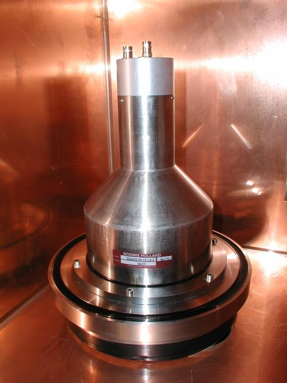
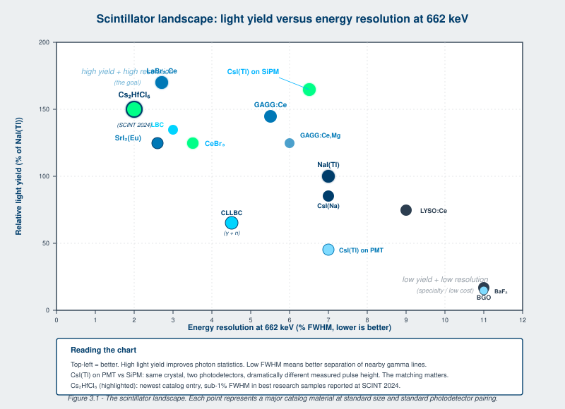
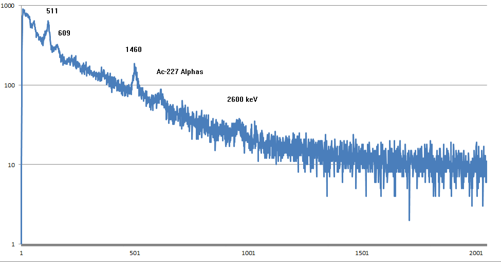
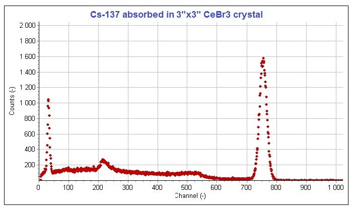
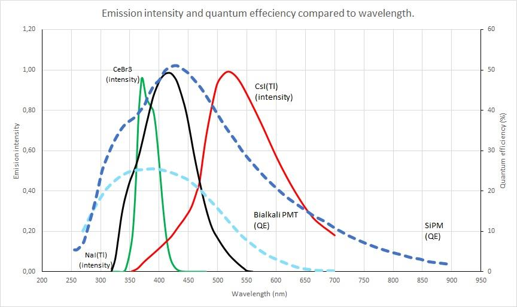
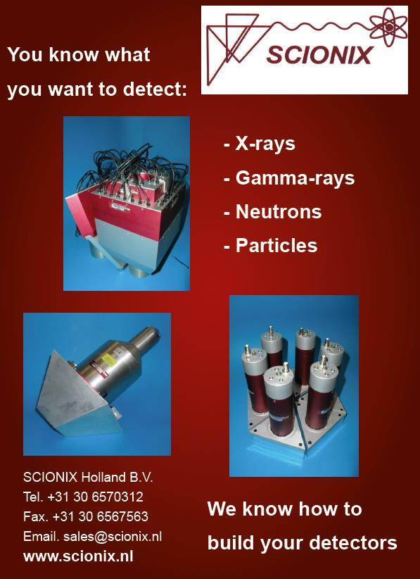
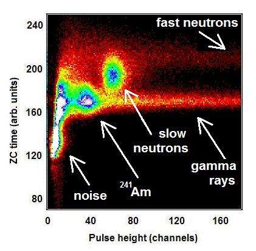
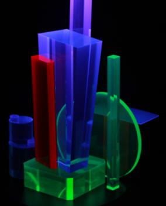

A working scintillator is a compromise. Light yield, decay time, density, atomic number, energy resolution, hygroscopicity, mechanical robustness, and cost all matter, and no single material optimizes all of them. The catalog of usable scintillators has expanded substantially since the first edition of this book, and the engineer specifying a detector in 2026 has more choices than they had in 2020. This chapter walks through the properties that matter, the material families, and which to reach for in which situation.

Five characteristics, in roughly the order an engineer asks about them.
Density and effective Z. For gamma detection, high density and high Z mean high stopping power per unit volume. Inorganic scintillators range from 3.0 to 9.0 grams per cubic centimeter and from Z_eff of about 30 to over 70. The high-Z, high-density materials (BGO at 7.13 g/cc, LYSO at 7.20 g/cc, CdWO4 at 7.90 g/cc, PbWO4 at 8.28 g/cc) dominate applications where you need a compact, efficient gamma detector and you can tolerate the energy-resolution trade-off that comes with these materials. The low-Z scintillators (plastic at 1.02 g/cc, CaF2:Eu at 3.18 g/cc, YAP:Ce at 5.55 g/cc with low Z_eff) are reached for when you specifically want low backscatter for charged particles.
Light output. Photon statistics drive energy resolution at low energies, so high light yield is generally desirable. Light output is normally specified in photons per MeV (typically 10,000 to 60,000 for inorganic scintillators, 10,000 to 12,000 for plastics). It is sometimes specified relative to NaI(Tl) under the same conditions; when it is, a number around 100 means "comparable to NaI(Tl)". The emission wavelength must also match the photodetector's sensitivity, which is what Chapter 6 is about.
Decay time. The 1/e fall time of the scintillation pulse, after the rise. Some materials have multiple decay components (BaF2 has a sub-ns fast component and a 600 ns slow component; CsI(Tl) has 0.6 us and 3.4 us components; CLYC has 1, 50, and 1000 ns components). The "effective average decay time" reported in tables is a weighted average and can be misleading for fast-timing applications. For gating, timing, and high-rate counting, the fast component is what you actually use.
Mechanical and optical properties. Hygroscopicity is the big one. NaI(Tl) is highly hygroscopic; one fingerprint with a sweaty hand on a bare crystal will fog its surface. CsI(Tl) is only slightly hygroscopic and can be handled with reasonable care. CLLBC, CLYC, and the lanthanum halides are hygroscopic to various degrees. Hygroscopic materials must be hermetically sealed inside metal housings; this drives the canister design covered in Chapter 11. CsI(Tl) is also "plastic" in the mechanical sense: it deforms rather than cracking under stress, which is useful in array applications. NaI(Tl) cleaves preferentially along certain crystal planes. Refractive index ranges from 1.47 (CaF2) to 2.30 (CdWO4); higher indices make light extraction harder and impose stricter requirements on optical coupling.
Cost. A NaI(Tl) detector costs a small fraction of a LaBr3:Ce detector of similar volume, which costs a small fraction of a CLLBC detector of similar volume. Cost scales with crystal growth time, raw material cost, and yield. Custom geometries cost more than catalog sizes. Lead times have widened since 2022 across nearly all inorganic scintillators (Chapter 14, Section 14.10).
Table 3.1 gives the working specifications of the most common scintillators. Newer materials are added in the rows highlighted as "since first edition." For research-stage materials still in characterization, see Appendix A.
Table 3.1 - Physical properties of common scintillation materials
| Material | Density (g/cc) | Emission max (nm) | Decay time | Refractive index | Light yield (% of NaI:Tl) | Hygroscopic |
|---|---|---|---|---|---|---|
| NaI(Tl) | 3.67 | 415 | 230 ns | 1.85 | 100 | yes |
| CsI(Tl) | 4.51 | 550 | 0.6 / 3.4 us | 1.79 | 45 (PMT) / 165 (PD) | slightly |
| CsI(Na) | 4.51 | 420 | 630 ns | 1.84 | 85 | yes |
| CsI (undoped) | 4.51 | 315 | 16 ns | 1.95 | 4-6 | no |
| CaF2(Eu) | 3.18 | 435 | 840 ns | 1.47 | 50 | no |
| LaCl3:Ce (90%) | 3.79 | 350 | 70 ns | 1.90 | 95-100 | yes |
| LaBr3:Ce (5%) | 5.08 | 380 | 16 ns | 1.90 | 165-180 | yes |
| LaBr2.85Cl0.15:Ce (LBC) | 4.90 | 380 | 35 ns | 1.90 | 140 | yes |
| CeBr3 | 5.23 | 370 | 18 ns | 1.90 | 130 | yes |
| SrI2(Eu) | 4.60 | 450 | 1-5 us | 1.85 | 120-140 | yes |
| 6LiI(Eu) | 4.08 | 470 | 1.4 us | 1.96 | 35 | yes |
| 6Li-glass (GS-20) | 2.6 | 390/430 | 60 ns | 1.56 | 4-6 | no |
| BaF2 | 4.88 | 220 / 315 | 0.8 ns / 630 ns | 1.54 | 5 (fast) / 16 (slow) | no |
| YAP:Ce | 5.55 | 350 | 27 ns | 1.94 | 35-40 | no |
| LYSO:Ce | 7.20 | 420 | 50 ns | 1.82 | 70-80 | no |
| LSO:Ce | 7.40 | 420 | 40 ns | 1.82 | 70 | no |
| GSO:Ce | 6.71 | 440 | 56 / 600 ns | 1.85 | 20-25 | no |
| BGO | 7.13 | 480 | 300 ns | 2.15 | 15-20 | no |
| CdWO4 | 7.90 | 470 / 540 | 5 / 20 us | 2.30 | 25-30 | no |
| PbWO4 | 8.28 | 420 | 7 ns | 2.16 | 0.2 | no |
| Plastic (PVT-based) | 1.02 | 375-600 | 2-5 ns | 1.58 | 25-30 | no |
| Cs2LiYCl6:Ce (CLYC) | 3.31 | 275-450 | 1 / 50 / 1000 ns | 1.81 | 30-40 (gamma) | yes |
| Cs2LiLaBr6:Ce (CLLB) | 4.18 | 410 | 55 / 270 ns | n/a | 60 | yes |
| Cs2LiLa(Br,Cl)6:Ce (CLLBC) | 4.10 | 410 | 55 / 270 ns | n/a | 60-70 | yes |
| GAGG:Ce (Gd3Al2Ga3O12:Ce) | 6.63 | 520 | 90-150 ns | 1.92 | 130-160 | no |
| Cs2HfCl6 (since 1st ed.) | 3.86 | 380 | 4 us | 1.81 | 130-180 | no |
| CLLBC (expanded) | 4.10 | 410 | 55 / 270 / 1100 ns | n/a | 60-70 (gamma) | yes |
| GYAGG:Ce (since 1st ed.) | 5.8 | 540 | 60-90 ns | 1.92 | 110-130 | no |
| GAGG:Ce,Mg (since 1st ed.) | 6.63 | 520 | 50-90 ns | 1.92 | 110-140 | no |
| LuAG:Pr (since 1st ed.) | 6.73 | 305 | 20 ns | 1.84 | 50-60 | no |
Notes: light yield is at room temperature, with PMT readout having a bi-alkali photocathode unless otherwise noted. CsI(Tl) in particular shows a very different relative light yield depending on whether the readout is PMT or photodiode/SiPM, because its 550 nm emission is far better matched to silicon than to a bialkali PMT.

This section walks through each major family, what it is good at, and where it tends to be deployed.
NaI(Tl) - sodium iodide thallium-doped. The most widely used scintillation crystal for gamma spectroscopy because of its high light output, the good match between its 415 nm emission and the spectral response of bialkali PMTs, and its low cost relative to its competitors. Energy resolution at 662 keV is typically 6 to 7 percent FWHM. NaI(Tl) is hygroscopic; bare crystals fog within minutes in normal humidity. NaI(Tl) ingots can be grown to 400 mm diameter in batches of hundreds of kilograms and can be cut to almost any size or shape. Cleaves preferentially along certain crystal planes. The non-proportionality of NaI(Tl) limits its energy resolution at high gamma energies; this is the bottleneck the high-resolution proportional scintillators were developed to break.
CsI(Tl) - cesium iodide thallium-doped. Density 4.51 grams per cubic centimeter, higher than NaI(Tl). Only slightly hygroscopic; long-term humidity affects the surface but not the bulk. Mechanically tough; deforms rather than cracking under stress, which makes it suitable for arrays of long thin pixels. Emission at 550 nm makes it a poor match for bialkali PMTs (relative light yield about 45 percent of NaI(Tl) with PMT readout) but an excellent match for silicon photodiodes and SiPMs (relative yield about 165 percent of NaI(Tl) on silicon). The decay time has two components, 0.6 microsecond and 3.4 microsecond; the relative ratio depends on the ionization density, which means CsI(Tl) responds differently to alpha and gamma events and can be used for alpha-gamma pulse shape discrimination. CsI(Tl) coupled to SiPM arrays is the dominant configuration in modern handheld and compact gamma spectrometers.
CsI(Na) - cesium iodide sodium-doped. Hygroscopic, high light output, mechanically rugged. Emission at 420 nm matches PMTs well, so its relative light yield with PMT readout is about 85 percent of NaI(Tl). At temperatures below 120 degrees Celsius it is an alternative to NaI(Tl). Used heavily in geophysical applications (well logging) where ruggedness matters and where temperature operating range is well below 120 C.
CsI (undoped) - intrinsic cesium iodide. Same density and Z as the doped versions, but with a fast emission near 300 nm and a decay time of about 16 nanoseconds at room temperature. Light yield is much lower than the doped variants because most of the scintillation is thermally quenched. Primarily used in calorimetry and other physics applications where speed matters more than light yield.

These materials achieve energy resolution well below the alkali-halide limit because their light yield is more proportional to electron energy.
LaBr3:Ce - cerium-doped lanthanum bromide. Light yield about 165 to 180 percent of NaI(Tl). Decay time around 16 nanoseconds. Energy resolution of 2.5 to 3 percent FWHM at 662 keV in well-grown samples. Hygroscopic. The downside is intrinsic background from La-138, which contributes a continuous beta and gamma signal in the spectrum and limits low-background applications. Despite this, LaBr3:Ce is the high-resolution gamma scintillator of choice for handheld isotope identifiers and for security applications where energy resolution wins over background concerns.
LaCl3:Ce - cerium-doped lanthanum chloride. Lower density than LaBr3:Ce, lower light yield (about 95 to 100 percent of NaI(Tl)), 70 nanosecond decay. Same La-138 intrinsic background concern. Used where the chloride form's better energy proportionality at low energies matters.
LBC - lanthanum bromide chloride mixed crystal (LaBr2.85Cl0.15:Ce). A compromise between LaBr3:Ce and LaCl3:Ce, with light yield about 140 percent of NaI(Tl) and 35 nanosecond decay time. Reduced La-138 background relative to pure LaBr3:Ce because of the lower lanthanum atomic concentration.
CeBr3 - cerium bromide. Density 5.23 grams per cubic centimeter. Light yield about 130 percent of NaI(Tl). Decay time 18 nanoseconds. Energy resolution comparable to LaBr3:Ce. The big advantage over LaBr3:Ce is the absence of intrinsic background, which makes CeBr3 the high-resolution scintillator of choice for low-background and homeland-security applications where false alarms from intrinsic activity are a concern.
SrI2(Eu) - europium-doped strontium iodide. Light yield 120 to 140 percent of NaI(Tl). Slow decay time, 1 to 5 microseconds. Energy resolution as good as 2.5 percent FWHM at 662 keV in well-grown samples. Hygroscopic. The slow decay limits SrI2(Eu) for high-rate applications, but for low-to-moderate rate spectroscopy it competes directly with LaBr3:Ce on energy resolution without the La-138 background.

Cs2HfCl6 (CHC) - cesium hafnium chloride. The biggest material development between the first and second editions of this book. Density 3.86 grams per cubic centimeter. Light yield reported at 130 to 180 percent of NaI(Tl) in research-grade samples [1][2]. Decay time around 4 microseconds. Energy resolution of 2 to 3 percent FWHM at 662 keV in commercial samples and below 1 percent in the best research-grade samples [1]. Critically, Cs2HfCl6 is non-hygroscopic, which means it can be packaged in plastic or epoxy housings rather than welded metal canisters. The slow decay time limits high-rate spectroscopy, but for applications where energy resolution and ruggedness matter and rate is moderate, Cs2HfCl6 is a strong new option. Appendix A covers the material in depth.

BGO - bismuth germanate Bi4Ge3O12. Density 7.13 grams per cubic centimeter, very high stopping power. Modest light yield (15 to 20 percent of NaI(Tl)) and modest energy resolution (10 to 12 percent at 662 keV). 300 nanosecond decay time. Used heavily in PET, in high-energy physics calorimetry where compact stopping power matters more than energy resolution, in Compton suppression spectrometers as the anti-coincidence shield around an HPGe, and in well-logging where high density helps with the limited tool diameter.
LSO:Ce - cerium-doped lutetium oxyorthosilicate Lu2SiO5:Ce. Density 7.40 grams per cubic centimeter. Light yield about 70 percent of NaI(Tl). 40 nanosecond decay. The fast, dense scintillator that displaced BGO in commercial PET starting in the early 2000s.
LYSO:Ce - cerium-doped lutetium-yttrium oxyorthosilicate Lu2(1-x)Y2xSiO5:Ce. A solid solution of LSO and yttrium oxyorthosilicate with similar properties. Slightly cheaper to grow than pure LSO. Now the dominant PET crystal. Energy resolution around 8 to 10 percent at 662 keV is typical. Modern LYSO-based TOF-PET modules achieve coincidence resolving times below 200 picoseconds and are still improving [3].
GSO:Ce - cerium-doped gadolinium oxyorthosilicate Gd2SiO5:Ce. Density 6.71 g/cc. Lower light yield than LSO, dual decay times (56 ns fast, 600 ns slow). Used in PET historically, mostly displaced by LSO and LYSO.
YAP:Ce - cerium-doped yttrium aluminum perovskite YAlO3:Ce. Density 5.55 g/cc but low Z_eff, so it has lower stopping power for gammas than its density suggests. 27 nanosecond decay, light yield 35 to 40 percent of NaI(Tl). Non-hygroscopic and can withstand gamma doses up to 10^4 Gy without degradation, making it useful in radiation-hard applications. Used in positron lifetime studies, fast timing, and high-rate (multi-MHz) X-ray spectroscopy.
CdWO4 - cadmium tungstate. Very high density (7.90 g/cc), low afterglow, slow decay (5 to 20 microseconds). Used in computed tomography arrays, in particle physics, and in geophysical research.
PbWO4 - lead tungstate. Highest practical density (8.28 g/cc), fast decay (7 ns), but dramatically low light yield (0.2 percent of NaI(Tl)). Used in high-rate, high-energy physics calorimetry where all that matters is stopping power and timing, and where the calorimeter has enough channels and integration time to overcome the photon-statistics deficit. The CMS electromagnetic calorimeter at the Large Hadron Collider is the canonical PbWO4 application.

The garnet scintillators emerged commercially in the 2010s and have expanded rapidly. The base material is Gd3Al2Ga3O12, the gadolinium aluminum gallium garnet (GAGG), and dopants and substitutions have produced a substantial family.
GAGG:Ce - cerium-doped GAGG. Density 6.63 g/cc. Light yield 130 to 160 percent of NaI(Tl). Decay time 90 to 150 nanoseconds. Energy resolution 5 to 6 percent at 662 keV. Non-hygroscopic. Mechanically robust, can be machined into pixels, fibers, or arbitrary shapes. Emission at 520 nm is excellent for silicon photodetectors. GAGG:Ce coupled to SiPM arrays has become a standard architecture for compact gamma spectrometers and array detectors.
GAGG:Ce,Mg - magnesium-codoped variant. Magnesium codoping shortens the decay time substantially (down to 50 to 90 nanoseconds) by suppressing slow components, with a modest light yield reduction. The codoped material is preferred for high-rate applications and for timing.
GYAGG:Ce - gadolinium-yttrium aluminum gallium garnet. Yttrium substitution reduces density slightly (5.8 g/cc) and lowers Gd-related self-absorption issues at large crystal sizes. Light yield 110 to 130 percent of NaI(Tl).
LuAG:Ce and LuAG:Pr - lutetium aluminum garnet doped with cerium or praseodymium. Density 6.73 g/cc. LuAG:Pr in particular has 20 nanosecond decay and emits at 305 nanometers, useful for very fast timing applications. Light yield is lower than GAGG:Ce, around 50 to 60 percent of NaI(Tl). Used in fast timing and in transparent ceramic forms for pixelated arrays.
Transparent ceramic garnets. The newest development is the production of garnet scintillators not as bulk single crystals but as transparent ceramics, fabricated by powder consolidation and sintering. This eliminates the slow Czochralski growth process and allows fabrication of complex shapes and large areas. Performance is approaching but not yet equaling the best single-crystal samples. Appendix A covers the state of the art.
Elpasolites are a family of mixed halides with the general formula Cs2NaY(Cl,Br)6 or related variants. They scintillate under both gamma rays and neutrons (via the 6Li or 6Li-equivalent nuclear reaction), and the difference in pulse shape between gamma and neutron events allows pulse shape discrimination. This makes elpasolites the dominant material for combined gamma-neutron handheld detection in homeland-security applications.
CLYC - Cs2LiYCl6:Ce. Density 3.31 g/cc. Light yield 30 to 40 percent of NaI(Tl) for gamma events. Three decay components (1, 50, 1000 nanoseconds), with the relative weights of the components depending on whether the event was a gamma or a neutron, which is what enables PSD. Energy resolution around 5 percent at 662 keV. Hygroscopic.
CLLB - Cs2LiLaBr6:Ce. Higher density (4.18 g/cc) than CLYC, higher light yield (around 60 percent of NaI(Tl) for gamma). Decay times 55 and 270 nanoseconds.
CLLBC - Cs2LiLa(Br,Cl)6:Ce. The mixed-halide version of CLLB. Density 4.10 g/cc. Light yield 60 to 70 percent of NaI(Tl) for gamma. Better energy resolution than CLYC, around 4 percent at 662 keV. The dominant material in current dual gamma-neutron handheld instruments.
Going Deeper - Pulse shape discrimination in elpasolites
A neutron capture event in CLYC, CLLB, or CLLBC produces a different mix of fast and slow scintillation light than a gamma interaction. Specifically, the ratio of the fast (singlet) component to the slow (triplet) component changes with linear energy transfer. Neutron capture produces a high-LET alpha and triton from the 6Li(n,alpha)3H reaction, which biases scintillation toward the slow component. Gamma interactions produce low-LET secondary electrons, biasing toward the fast component. PSD algorithms compute either a charge-comparison ratio (fast charge / total charge) or a time-of-arrival statistic and assign each event to a gamma or neutron bin in real time on the digital pulse processor. Modern implementations achieve figure-of-merit values above 3 for CLLBC, which corresponds to gamma misidentification rates below 0.01 percent at typical detection thresholds.
For pure thermal neutron detection (without gamma sensitivity as a feature), three older specialty scintillators remain in use.
6LiI(Eu) - europium-doped lithium iodide enriched in Li-6. Light yield about 35 percent of NaI(Tl). Detects thermal neutrons via the 6Li(n,alpha)3H reaction, with Q value of 4.78 MeV. The thermal neutron peak appears at a gamma-equivalent energy above 3 MeV, well above most natural gamma background, which makes 6LiI(Eu) suitable for applications where gamma rejection by energy thresholding is sufficient. 90 percent of thermal neutrons absorb in 3 mm of material. Crystals are grown to 25 mm diameter.
6Li-glass (GS-20) - cerium-activated lithium silicate glass enriched in Li-6. Lower light yield (4 to 6 percent of NaI(Tl)) than 6LiI(Eu), so the thermal neutron peak is broader and appears around 1.6 MeV gamma-equivalent. 90 percent thermal neutron absorption in 1 mm. Non-hygroscopic. Used in security and physics applications that need a robust thermal neutron detector but can tolerate the lower energy resolution.
Both 6Li-containing scintillators also detect fast neutrons, but with much lower efficiency than thermal.
BaF2 - barium fluoride. Two emission components: a fast sub-nanosecond UV component at 220 nm, and a slow 630 nanosecond component at 315 nm. The fast component requires a quartz-window photodetector to capture the UV. BaF2 is the fastest known inorganic scintillator and the choice for sub-nanosecond timing applications including positron lifetime measurements. Modest energy resolution (10 to 12 percent at 662 keV). Non-hygroscopic.

Plastic scintillators are organic dye molecules embedded in a polymer matrix, typically polyvinyltoluene (PVT) or polystyrene. They are cheap, easy to machine, available in arbitrary sizes from millimeter pixels to multi-meter sheets, and fast (decay times in the few-nanosecond range). Light yield is modest (25 to 30 percent of NaI(Tl)). Energy resolution is poor, typically not used for spectroscopy. Density is around 1.02 grams per cubic centimeter, so stopping power for gammas is very low.

Plastic scintillators are dominant in:
The PSD plastics deserve a special mention: formulations that incorporate certain dye combinations exhibit distinct fast and slow components that allow pulse shape discrimination similar to elpasolite-based dual-mode detectors, with much lower cost and much larger achievable volumes [4]. The trade-off is lower discrimination figure-of-merit; PSD plastics are well-suited to portal-monitor applications where moderate discrimination at low cost beats high discrimination at high cost.
Liquid scintillators are organic dye dissolved in a solvent (typically xylene, pseudocumene, or linear alkylbenzene). They share most properties with plastic scintillators (low density, fast, modest light yield, poor energy resolution) but with the additional ability to dissolve the radioactive sample directly into the scintillator. This is called "sample mixing" or "cocktail counting" and is the foundation of liquid scintillation counting (LSC) for low-energy beta detection.
LSC is the only scintillation technique that delivers near-100-percent detection efficiency for tritium (H-3) and carbon-14 betas, because the radiation never has to cross a wall. The sample is mixed with the scintillator cocktail in a vial, the vial is loaded into a counter that measures the resulting scintillations through a photomultiplier system, and the counts are corrected for sample-related quenching. LSC is the workhorse technique for biomedical research with H-3 and C-14 labels, environmental monitoring of low-level beta activity, and bioassay of internally deposited radionuclides in workforce dosimetry.
Liquid scintillators are also used in physics experiments at very large scales: kiloton-scale liquid scintillator detectors for neutrino physics (KamLAND, Daya Bay, JUNO under construction) and tens-of-cubic-meter active-shielding tanks around HPGe detectors in low-background applications.
The main failure modes of liquid scintillators are oxygen quenching (which can cut light yield by 20 to 30 percent if the vial is not sealed), color quenching (sample color reduces the transmitted light), and chemical interaction between sample and cocktail. Modern cocktails are formulated to mitigate all three.
Afterglow is the residual emission of light from a scintillator after a primary scintillation event, persisting on timescales much longer than the nominal decay time. It arises from delayed recombination of trapped charge carriers and varies dramatically across materials. CsI(Tl) has notable afterglow at the 0.1 percent level after several milliseconds; this matters for high-rate imaging applications such as CT, where pulse pile-up and afterglow combine to limit achievable rate. CdWO4 has been bred specifically for low afterglow. Plastic and most non-alkali halide inorganics have very low afterglow.
Afterglow is specified in two ways: as a fraction of the prompt light at a specific time delay, and as a decay function over a longer timescale. Manufacturer specifications usually give the value at a few hundred milliseconds or 1 second, but applications-driven characterization may need data out to seconds.
In a CT scanner, afterglow at the few-tens-of-microsecond timescale shows up as ghosting in the reconstructed image. In a PET scanner with a fast scintillator, prompt-component afterglow shows up as random coincidences. In a gamma camera, afterglow shows up as a slowly decaying baseline that the spectrum-stabilization algorithm has to track.
Going Deeper - Afterglow as trap depth distribution
The afterglow time profile reflects the distribution of trap depths in the scintillator. A trap of depth E_t has an emptying rate proportional to exp(-E_t / kT), so deep traps empty slowly and shallow traps empty fast. Multi-component afterglow (often modeled as a sum of two or three exponentials) reflects discrete trap populations. Annealing the crystal at elevated temperature can sometimes reduce trap density. Co-doping (the magnesium addition in GAGG:Ce,Mg, for example) is used specifically to suppress slow components by competing with the slow-trap pathway. Modern characterization techniques include thermoluminescence glow curves to map trap depth distributions and time-correlated single photon counting to directly measure the long-tail emission.
The remaining gaps in the materials catalog are filled in:
BNC in Practice - The first call to the applications engineer
When a customer calls and says "I need a scintillator," the first three questions an experienced applications engineer asks are: what energy range, what count rate, and what environment. Energy range narrows the material choice to high-Z (gamma above 100 keV) or low-Z (charged particles), and points toward proportional or non-proportional materials. Count rate decides whether a microsecond decay (Cs2HfCl6, SrI2(Eu)) is acceptable or whether a fast scintillator (LYSO, GAGG:Ce,Mg, BaF2) is required. Environment, meaning temperature, vibration, humidity, and ambient radiation, decides the housing, the photodetector, and which Ce-doped or non-hygroscopic material wins. The catalog is wide. The right configuration is rarely the customer's first guess.
The materials in this chapter are the standard catalog. The materials in Appendix A are the ones moving from research into the catalog. The next book on this subject, written ten years from now, will list materials that have not been characterized yet and will treat what is here today as the foundation. The pace is what is new. The right way to read this chapter is not as a closed list but as a snapshot of a list that is opening at the bottom every year.
Take it interactively. The quiz lives on its own page. Pick one answer per question, then check your score. Auto-scored, and your answers are saved on this device. About 10 minutes.
Or read the questions and answers inline below (preserved for print and offline use).
[1] M. Yoshikawa et al., "Cs2HfCl6 single crystal growth and scintillation properties," in Proc. SCINT 2024, Milan, 2024.
[2] B. P. Kang et al., "Crystal growth and scintillation properties of Cs2HfCl6," J. Cryst. Growth, vol. 593, p. 126773, 2022.
[3] S. Vandenberghe et al., "Recent developments in time-of-flight PET," EJNMMI Phys., vol. 7, p. 35, 2020.
[4] N. Zaitseva et al., "Plastic scintillators with efficient neutron/gamma pulse shape discrimination," Nucl. Instrum. Methods A, vol. 668, pp. 88-93, 2012.
[5] M. Kapusta et al., "Properties of CLLBC scintillator: A combined gamma and neutron detector," in Proc. IEEE NSS-MIC 2023, Vancouver, 2023.
[6] M. T. Lucchini et al., "Co-doping of GAGG with Mg for improved scintillation timing," Nucl. Instrum. Methods A, vol. 816, pp. 176-183, 2016.
[7] K. Kamada et al., "Composition engineering in cerium-doped (Lu,Gd)3(Ga,Al)5O12 single-crystal scintillators," Cryst. Growth Des., vol. 11, pp. 4484-4490, 2011.
[8]